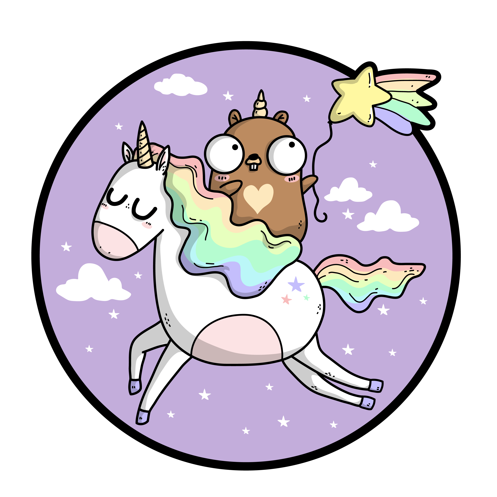

Flexible Env in Go V2
lalabuy948/genvutils
Motivation
As you probably saw my founding of two nice libraries that allow you beauty and easy abstraction on dot and just environment variables. You can check it there
After some time I decided to create another open-source library for the world and I merged the functionality of packages which you can find in the article above. I started from scratch and you are more than welcome to have look on it on my GitHub -> github.com/lalabuy948/genvutils
I wanted to have control of the dependency which I use in quite a few personal projects. Adding features when I need them and share a piece of mine with others, which makes me super happy and feel useful for the golang community. In the first week, GitHub insights were showing that I had over 1k downloads.
Functionality
As simple as possible. The main feature is loading dot environment file by priority and if exists. Dumping your environment variables into a typed structure. And this is it.
Github Actions
I would like to mention Github Actions here as well. If you didn’t use it I recommend you to try it! It’s simple cozy and fast. For such a small library that I’ve done I automated laterally everything with a small YAML file. Which contains: linter, tests and hash sum update for pkg.go.dev.
Btw I’m really proud of my bash skill to do the last thing in one line 😂
curl https://sum.golang.org/lookup/github.com/lalabuy948/genvutils@"$(git describe --tags `git rev-list --tags --max-count=1`)"
Gopher on the cover by ashleymcnamara 💙